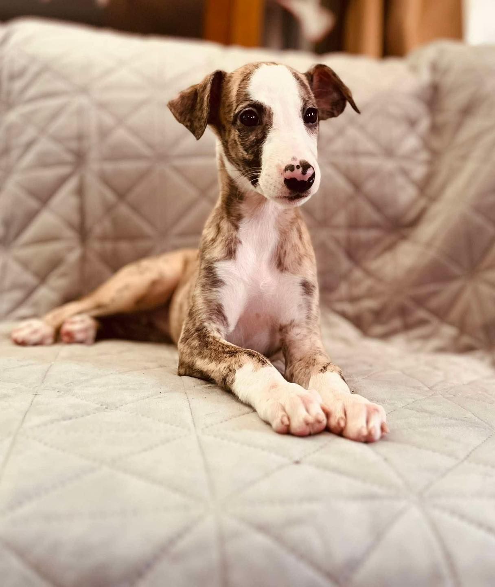
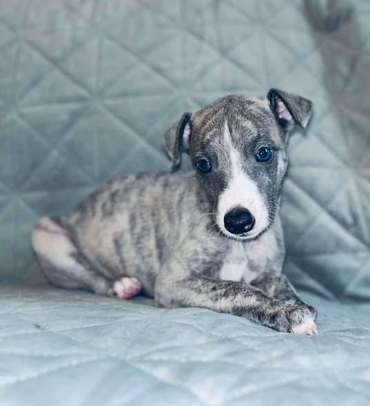
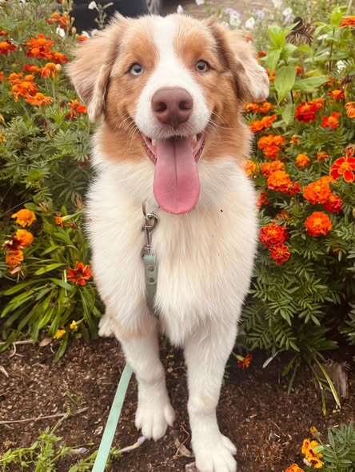
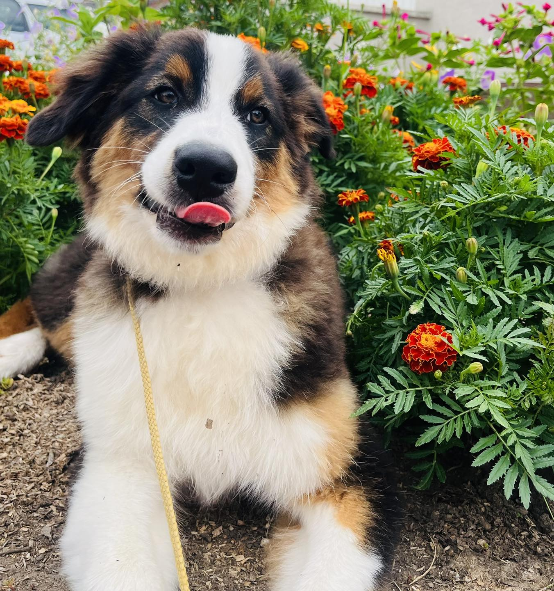

Aktuális és tervezett almok
Télen várhatóak új whippet almok.
Whippet kiskutyáink
Whippeteink elsősorban családi kedvencként és sporttársként nevelkednek, így kiskutyáink is ilyen környezetbe kerülnek. Jellemző rájuk a nyugodt, kiegyensúlyozott természet, de emellett játékosak és kíváncsiak is. Ideális választás lehetnek családoknak, kezdő gazdiknak, vagy akár sportosabb életmódot folytatóknak is.

Rózsakvarc
Nem: Szuka
Szín: Sötét csíkos fehér jeggyel
Születési dátum: 2024-11-30
Státusz: foglalható
Kedves nyugod kutya, elsősorban családi kedvencnek ajánlott.

Dobby
Nem: Kan
Szín: Kék csíkos
Születési dátum: 2024-12-14
Státusz: foglalt
Igazi kis rosszcsont, aktív gazdiknak ajánlott.
Ausztrál juhász kiskutyáink
Ausztrál juhász kiskutyáink sportos, aktív családokhoz kerülnek, akik szívesen foglalkoznak velük. Ezek a kutyák rendkívül intelligensek és tanulékonyak, így ideálisak különféle kutyasportokra, de megfelelő nevelés és szocializáció mellett családi kedvencként is megállják a helyüket.

Bently
Nem: Kan
Szín: Red Merle
Születési dátum: 2025-03-27
Státusz: foglalható
Nagy mozgásigényű, játékos kutya, ideális sportos családoknak.

Range Rover
Nem: Kan
Szín: Black Tricolor
Születési dátum: 2025-03-27
Státusz: foglalt
Kis szeretetetgombóc, családi kedvencnek is alkalmas.